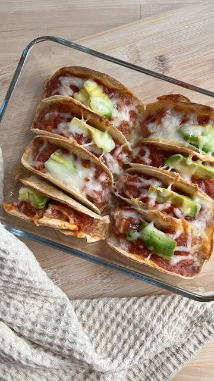
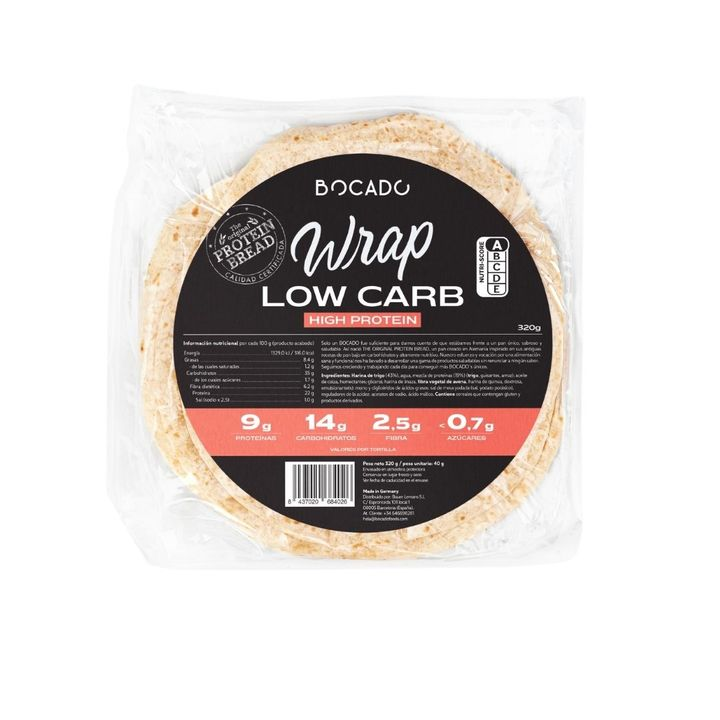

Receta · Desayuno · 25 min aprox.
Mini Tacos de Picada Vegetal
Mini Tacos de Picada Vegetal es una receta fácil con Wrap Low Carb, lista en unos 25 minutos. Lleva salsa de tomate, aguacate y queso rallado, y es perfecta para un desayuno o un brunch. Wrap Low Carb aporta 22 g de proteína por cada 100 g.
5 ingredientes5 pasos25 min aprox.Con vídeo

Hecha conWrap Low Carb320 g · 8 tortillas de 40 gVer productoIngredientes
- Wrap Low Carb
- Picada vegetal Bocado
- Salsa de tomate
- Aguacate
- Queso rallado
Información nutricional1 tortilla (40g): 14g carbohidratos, 9g proteínas, 2,5g fibra
Preparación
- 01Cortar los wraps en circulitos
- 02Hidratar la picada vegetal
- 03Rellenar con picada vegetal, salsa de tomate y aguacate
- 04Cubrir con queso rallado
- 05Hornear
Al reproducir el vídeo, YouTube puede instalar cookies. Más información.